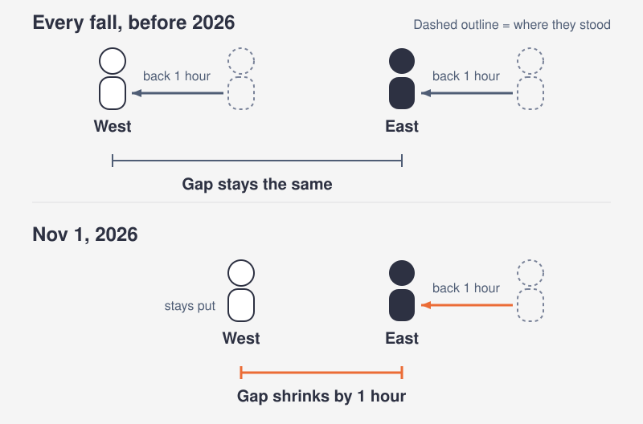
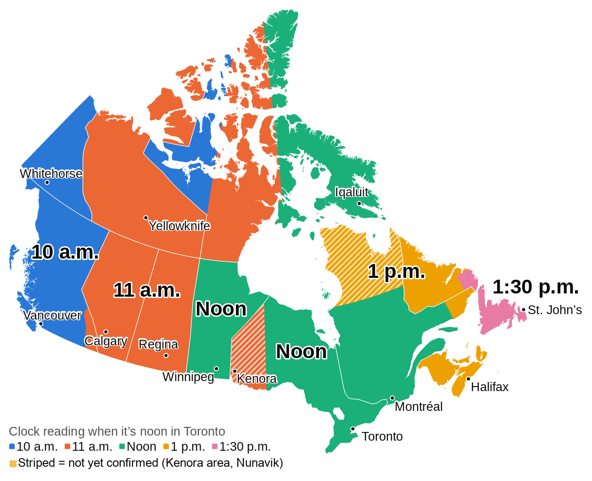
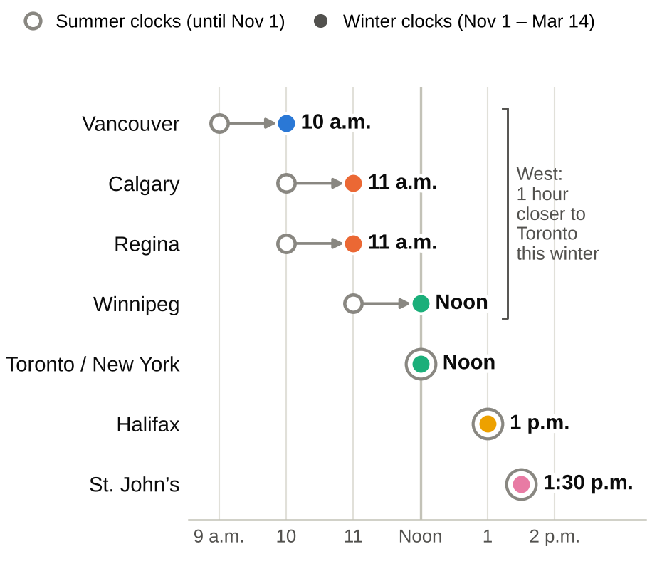
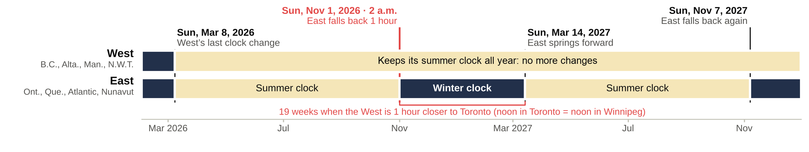
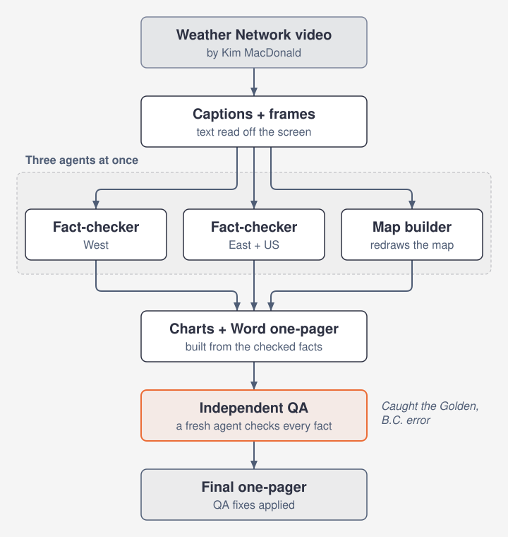

Prepared Oct 13, 2026
What time is it in Canada?
The 2026 clock change, explained like you're 5
Sunday, Nov 1, 2026
2 a.m. local time
East falls back 1 hourWest stays put
Fall back means set the clock one hour earlier.
Picture a race
The East runs in front. The West runs behind.
Every fall, everyone stepped back one hour together. The gap never changed.
In 2026 the West sits it out. Only the East steps back. The gap gets one hour smaller.

B.C., Alberta, Manitoba and the N.W.T. (Northwest Territories) moved their clocks ahead on March 8, 2026, and are keeping them there. Saskatchewan and Yukon quit the switch years ago.
Who steps back?
Stays put
- Yukon
- B.C.
- Alberta
- Saskatchewan
- N.W.T.
- Manitoba
Falls back 1 hour
- Ontario
- Quebec
- New Brunswick
- Nova Scotia
- Prince Edward Island
- Newfoundland and Labrador
- Nunavut
Not yet confirmed: Nunavik (far north Quebec) and the Kenora area (northwestern Ontario).
Quebec is more than one clock: its Lower North Shore keeps Atlantic time all year.
What do the clocks say?
The clock in each place when it is noon in Toronto, this winter.

Same moment, two seasons
Noon in Toronto and New York. What do other cities read?

The East changed its clocks. The West did not. So the gap shrinks.
When?

- Sun, Mar 8, 2026The West's last clock change.
- Sun, Nov 1, 2026, 2 a.m. local timeThe East falls back one hour.
- Sun, Mar 14, 2027The East springs forward. The summer gaps return.
Nov 1 to Mar 14 is 19 weeks. All that time, the West sits one hour nearer to Toronto's clock.
Fun twists
- Kenora area: not settled. Ontario has announced no change. Still, the shared database of time zone rules that phones rely on (release tzdata 2026e, Sep 29, 2026) treats the area as following Winnipeg.
- Quebec is split. The Lower North Shore keeps Atlantic time all year, like the Maritimes this winter. Nunavik might keep daylight time (the summer clock), but that plan is not confirmed.
- Vancouver to Seattle. Seattle still turns its clocks back. Drive south and you gain an hour.
- Alberta and Saskatchewan. One clock all year, two names: Alberta Time and Central Standard Time (CST).
- B.C. exceptions. The East Kootenay and the town of Golden follow Alberta's clock, which runs one hour ahead of Vancouver's all year. Golden's council dropped its fall-back plan on Sep 22, 2026.
- Check your phone. Manitoba's change only reached the shared database on Sep 29, 2026 (release tzdata 2026e). An out-of-date device may show the wrong Winnipeg time after Nov 1.
- Spring 2027. The East springs forward on Mar 14. The West never touches its clocks.
How this page was made

- Three agents (AI helpers with one job each) worked at the same time: two fact-checkers and a map builder.
- In the first session, a fresh QA agent (a quality check) caught a wrong claim about Golden, B.C.
- A second pass, run while writing this page, re-checked every claim. A narrow tiebreak on the newest sources confirmed Golden's reversal, and two claims the first one-pager stated as fact, Kenora and Nunavik, are now labeled not yet confirmed.
- Lesson: cap the searches. Together the four agents used about 570k tokens (small chunks of text an AI reads and writes), per the build session's own report.